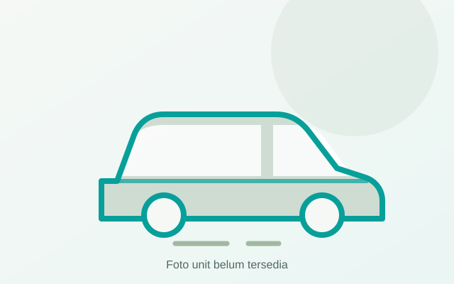

%2C%20Jakarta%2C%20Indonesia.jpg?width=1000)
Toyota Calya
Tarif dalam kotaRp350.000–Rp650.000
Jelajahi model dan kategori armada pada data prototipe. Semua gambar, tarif, spesifikasi, fasilitas, dan ketersediaan harus diverifikasi sebelum informasi dipakai untuk pemesanan.
Tarif, spesifikasi, fasilitas, dan status unit pada katalog ini merupakan data dummy untuk prototipe, bukan penawaran aktual. Hubungi customer support WhatsApp di 0813 8333 3707 untuk meminta informasi terbaru.
Kami tidak menemukan armada yang cocok dengan kata kunci atau filter yang Anda pilih. Coba gunakan istilah umum seperti Avanza, Hiace, atau Bus.
%20front%20view%2002.jpg?width=1000)
%2C%20Jakarta%2C%20Indonesia.jpg?width=1000)
%2C%20Jakarta%2C%20Indonesia.jpg?width=1000)
%2C%20Jakarta%2C%20Indonesia.jpg?width=1000)

%2C%20Jakarta%2C%20Indonesia.jpg?width=1000)
%20front%20view.jpg?width=1000)


%2C%20Denpasar.jpg?width=1000)
%20front%20view.jpg?width=1000)
Tim perencana rute kami siap membantu menyusun estimasi waktu, rute hemat tol, dan jenis kendaraan paling tepat.